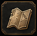
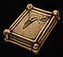
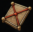
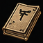
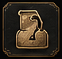
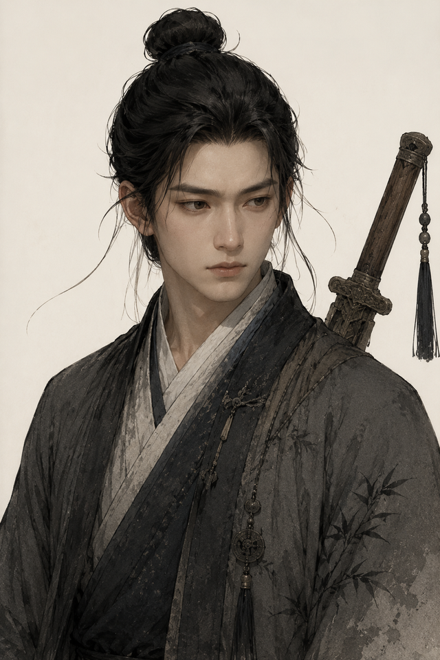

地图
旁白
展开 ▾
发送
背包

任务

案件板
人物

笔记
背包
查看你持有的物品
任务
查看当前任务进度
案件板
查看线索与推理关系
人物
查看人物关系与信息
笔记
查看已记录的笔记
地图
查看已探索的地图

存档
保存或读取游戏进度
摸鱼模式
伪装成朴素备忘录
重新开始
清除存档，从头开始游戏
返回游戏
任务
任务
主线
…
线索
人物关系
查看全部关系
背包
全部
道具
使用
查看
丢弃
案件板
整理线索
笔记
全部
已收藏
新建笔记
人物
全部
已相遇
未相遇
查看关系图谱

许七安
龙虎山弟子
气血
100/100
请旋转手机
本作需竖屏游玩